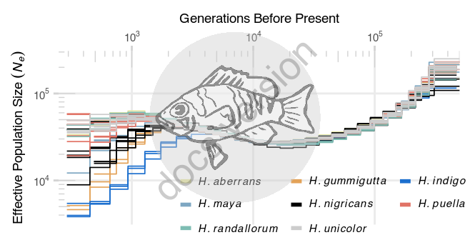
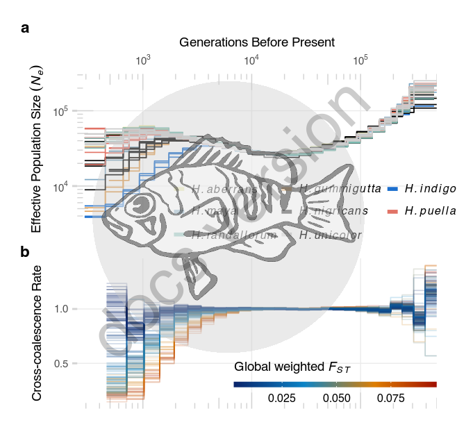

18 Figure 2
18.1 Summary
This is the accessory documentation of Figure 2.
The Figure can be recreated by running the R script plot_F2.R:
cd $BASE_DIR
Rscript --vanilla R/fig/plot_F2.R \
2_analysis/msmc/output/ \
2_analysis/cross_coalescence/output/ \
2_analysis/msmc/setup/msmc_grouping.txt \
2_analysis/msmc/setup/msmc_cc_grouping.txt \
2_analysis/summaries/fst_globals.txt18.2 Details of plot_F2.R
In the following, the individual steps of the R script are documented. It is an executable R script that depends on the accessory R packages GenomicOriginsScripts, as well as on the R packages hypoimg and patchwork.
18.2.1 Config
The scripts start with a header that contains copy & paste templates to execute or debug the script:
#!/usr/bin/env Rscript
# run from terminal:
# Rscript --vanilla R/fig/plot_F2.R \
# 2_analysis/msmc/output/ 2_analysis/cross_coalescence/output/ \
# 2_analysis/msmc/setup/msmc_grouping.txt 2_analysis/msmc/setup/msmc_cc_grouping.txt \
# 2_analysis/summaries/fst_globals.txt
# ===============================================================
# This script produces Figure 2 of the study "Ancestral variation, hybridization and modularity
# fuel a marine radiation" by Hench, Helmkampf, McMillan and Puebla
# ---------------------------------------------------------------
# ===============================================================
# args <- c('2_analysis/msmc/output/', '2_analysis/cross_coalescence/output/',
# '2_analysis/msmc/setup/msmc_grouping.txt', '2_analysis/msmc/setup/msmc_cc_grouping.txt',
# '2_analysis/summaries/fst_globals.txt')
# script_name <- "R/fig/plot_F2.R"
# ----------------------------------------The next section processes the input from the command line.
It stores the arguments in the vector args.
The R packages GenomicOriginsScripts, hypoimg and patchwork are loaded and the script name and the current working directory are stored inside variables (script_name, plot_comment).
This information will later be written into the meta data of the figure to help us tracing back the scripts that created the figures in the future.
Then we drop all the imported information besides the arguments following the script name and print the information to the terminal.
args <- commandArgs(trailingOnly = FALSE)
# setup -----------------------
library(GenomicOriginsScripts)
library(hypoimg)
library(patchwork)
cat('\n')
script_name <- args[5] %>%
str_remove(.,'--file=')
plot_comment <- script_name %>%
str_c('mother-script = ',getwd(),'/',.)
args <- process_input(script_name, args)#> ── Script: R/fig/plot_F2.R ────────────────────────────────────────────
#> Parameters read:
#> ★ 1: 2_analysis/msmc/output/
#> ★ 2: 2_analysis/cross_coalescence/output/
#> ★ 3: 2_analysis/msmc/setup/msmc_grouping.txt
#> ★ 4: 2_analysis/msmc/setup/msmc_cc_grouping.txt
#> ★ 5: 2_analysis/summaries/fst_globals.txt
#> ────────────────────────────────────────── /current/working/directory ──The directories for the demographic inference and the cross-coalescence data are received and stored in respective variables. Also, the files containing the groupings for demographic inference and cross-coalescence as well as the reference file for the genome wide \(F_{ST}\) values are received.
# config -----------------------
msmc_path <- as.character(args[1])
cc_path <- as.character(args[2])
msmc_group_file <- as.character(args[3])
cc_group_file <- as.character(args[4])
fst_globals_file <- as.character(args[5])The msmc sample groupings are imported and the \(F_{ST}\) values loaded.
# actual script =========================================================
msmc_groups <- read_tsv(msmc_group_file)
cc_groups <- read_tsv(cc_group_file)
fst_globals <- vroom::vroom(fst_globals_file,delim = '\t',
col_names = c('loc','run_prep','mean_fst','weighted_fst')) %>%
separate(run_prep,into = c('pop1','pop2'),sep = '-') %>%
mutate(run = str_c(pop1,loc,'-',pop2,loc),
run = fct_reorder(run,weighted_fst))Next, the file names of all msmc results are collected.
# locate cross-coalescence results
msmc_files <- dir(msmc_path, pattern = '.final.txt.gz')
cc_files <- dir(cc_path, pattern = '.final.txt.gz')Separately, all the demographic inference and cross-coalescence data are read in an compiled into two data sets.
# import effective population size data
msmc_data <- msmc_files %>%
map_dfr(.f = get_msmc, msmc_path = msmc_path)
# import cross-coalescence data
cc_data <- cc_files %>%
map_dfr(get_cc, cc_groups = cc_groups, cc_path = cc_path) %>%
mutate( run = factor(run, levels = levels(fst_globals$run)))The default color scheme is adjusted (to keep H. unicolor visible) and the tick color for the plots is defined.
# color adjustments for line plots (replace white by gray)
clr_alt <- clr
clr_alt['uni'] <- rgb(.8,.8,.8)
clr_ticks <- 'lightgray'The first panel containing the demographic history is created.
p_msmc <- msmc_data %>%
# remove the two first and last time segments
filter(!time_index %in% c(0:2,29:31)) %>%
ggplot( aes(x=YBP, y=Ne, group = run_nr, colour = spec)) +
# add guides for the logarithmic axes
annotation_logticks(sides="tl", color = clr_ticks, size = plot_lwd) +
# add the msmc data as lines
geom_line(size = .3)+
# set the color scheme
scale_color_manual(NULL,
values = clr_alt, label = sp_labs) +
# format the x axis
scale_x_log10(expand = c(0,0),
breaks = c(10^3, 10^4, 10^5),
position = 'top',
labels = scales::trans_format("log10", scales::math_format(10^.x))) +
# format the y axis
scale_y_log10(labels = scales::trans_format("log10", scales::math_format(10^.x)),
breaks = c(10^3,10^4,10^5,10^6)) +
# format the color legend
guides(colour = guide_legend(title.position = "top",
override.aes = list(alpha = 1, size=1),
nrow = 3,
keywidth = unit(7, "pt"),
byrow = TRUE)) +
# set the axis titles
labs(x = "Generations Before Present",
y = expression(Effective~Population~Size~(italic(N[e])))) +
# set plot range
coord_cartesian(xlim = c(250, 5*10^5)) +
# tune plot appreance
theme_minimal()+
theme(text = element_text(size = plot_text_size),
axis.ticks = element_line(colour = clr_ticks),
legend.position = c(1.05,-.175),
legend.justification = c(1,0),
legend.text.align = 0,
panel.grid.minor.x = element_blank(),
panel.grid.minor.y = element_blank(),
title = element_text(face = 'bold'),
legend.spacing.y = unit(-5,"pt"),
legend.spacing.x = unit(3, "pt"),
axis.title = element_text(face = 'plain'),
legend.title = element_text(face = 'plain'))
Then, the second panel containing the cross-coalescence plot is created.
p_cc <- cc_data %>%
# remove the two first and last time segments
filter( !time_index %in% c(0:2,29:31)) %>%
arrange(run_nr) %>%
# attach fst data
left_join(fst_globals %>%
select(run, weighted_fst)) %>%
ggplot(aes(x = YBP, y = Cross_coal, group = run_nr, color = weighted_fst)) +
# add guides for the logarithmic axis
annotation_logticks(sides="b", color = clr_ticks, size = plot_lwd) +
# add the msmc data as lines
geom_line(alpha = 0.2, size = .3)+
# set the color scheme
scale_color_gradientn(name = expression(Global~weighted~italic(F[ST])),
colours = hypogen::hypo_clr_LGs[1:24])+
# format the x axis
scale_x_log10(expand = c(0,0),
labels = scales::trans_format("log10", scales::math_format(10^.x))) +
# set the axis titles
guides(color = guide_colorbar(barheight = unit(3, 'pt'),
barwidth = unit(110, 'pt'),
title.position = 'top'
)) +
# set the axis titles
labs(x = "Generations Before Present",
y = 'Cross-coalescence Rate') +
# set plot range
coord_cartesian(xlim = c(250, 5*10^5)) +
# tune plot appreance
theme_minimal()+
theme(text = element_text(size = plot_text_size),
axis.ticks = element_line(colour = clr_ticks),
legend.position = c(1,.03),
legend.direction = 'horizontal',
legend.justification = c(1,0),
panel.grid.minor.x = element_blank(),
panel.grid.minor.y = element_blank(),
title = element_text(face = 'bold'),
axis.title = element_text(face = 'plain'),
axis.title.x = element_blank(),
axis.text.x = element_blank(),
legend.title = element_text(face = 'plain'))Then, the figure is composed from both panels.
# combine panels a and b
p_done <- p_msmc /
p_cc +
plot_annotation(tag_levels = c('a')) &
theme(legend.text = element_text(size = plot_text_size_small),
legend.margin = margin(t = 0, r = 0, b = 0, l = 0, unit = "pt"),
panel.grid.major = element_line(size = plot_lwd),
axis.ticks.x = element_blank(),
panel.background = element_blank(),
plot.background = element_blank())
Finally, we can export Figure 2.
# export figure 2
hypo_save(plot = p_done, filename = 'figures/F2.pdf',
width = f_width_half,
height = f_width_half * .95,
comment = plot_comment,
bg = "transparent",
device = cairo_pdf)